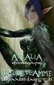

Récits Légendes de Kirin Tor Personnages Célébrités Guildes
Outils Calendrier Calendrier Illustré Mod d'interface
Informations Historiens FAQ Liens Crédits
Les légendes de Kirin Tor
==> Afficher les personnages de La Famille Brilleflamme
Terra
 Age : 15 (criteres humains)
Age : 15 (criteres humains)
Sexe : Femme
Race : Elfe
Faction : Alliance
Formation : Voleur
Description : Originaire d'un Royaume Exterieur au monde d'Azeroth, Terra Brilleflamme a un passé troublant et de nombreux mystères scellés en elle.
Sa naissance est mystérieuse, de part le fait qu'elle ait deux mamans naturelles, l'une elfique, Athalia Brilleflamme, l'autre humaine, Celes d'Orleans dit "Temperance" mais pas de père.
Son arrivée en les terres de Kalimdor est aussi un mystere, elle avouera quant à elle "avoir traversé la grande mer à dos d'Hippogriffe".
Petite enfant sauvage de Teldrassil elle fut rencontrée pour la première fois au bord du Lac jouxtant Dolanaar par l'Elfe de la Nuit Arendil, maitresse de l'Ambretoile, qui fut troublée par l'étrange clairvoyance de la jeune enfant et son talent à assimiler les connaissances et les techniques enseignées à une vitesse fulgurante.
Devenant au fil des jours une grande exploratrice, exploitant ses talents de cartographes et d'éclaireuse sans doute innés, Terra devint une Arpenteuse solitaire tres douée, jusqu'à son acceptation au sein de la Toile d'Ambre.
Elfe étrange, rompue à la géologie, à l'art de la mine, maniant plus aisément le fusil de précision à l'arc ancestral elfique, elle rencontra au hasard de ses explorations la prêtresse Mélisandre, la druidesse Aëlfin et l'ingénieuse gnomique Moufette, apprenant de cette dernière l'art de l'ingénierie gnomique.
Ses talents d'assimilation ne firent que croitre à mesure qu'elle vieillissait et elle put obtenir son diplome de Doctoresse à Theramore en trois jours, à la grande stupeur du docteur de Theramore.
Une humaine érudite, l'archimage Zesstra, decelà la source de cette assimilation: Terra recele en elle un étrange pouvoir psychique.
Devenue "tante" de Terra par adoption affective, "Tatie Zesstra" essaya d'enseigner , avec "maitresse Arendil", les valeurs morales à cette petite sauvageonne associale.
Petite elfe accueillante, extravagante et joyeuse avec ceux qu'elle apprécie, elle semble cacher ses véritables traits de caractère et son histoire derrière une puérilité infantile, se faisant regulièrement sous estimer par le regard exterieur.
Tres tôt repérée par le SI7, on lui donna le code professionnel d'"Arcane XIII", l'Arcane Sans Nom du tarot divinatoire
Derriere les masques de jeune elfe joyeuses et aimante, loyale et fidèle jusqu'au fanatisme envers ses proches et sa maitresse, qu'elle semble reverer comme une déité, se cache une assassin impitoyable, rompu à un étrange art mystique de combat à main nues et à armes exotiques.
Son affinité avec l'ombre est aussi à la fois étrange et inquietant, semblant fondre en elle assez rapidement.
La petite Terra semble être gardienne de mille secrets, que celà soit les siens ou ceux que l'on lui confie, étant toujours ouverte aux discussions et aux confidences, apportant son avis quand on lui demande avec la plus grande franchise possible
Son manque de tact, son impulsivité et une débauche d'énérgie parfois mal controlée semblent être ses défauts apparents.
Plus d'infos sur Terra >>>
Lire les 9 récits de Terra >>>
Athalia
Age : apparent selon les critères humains: 30 réel selon les dires de son épouse: 40000Sexe : Femme
Race : Elfe
Faction : Alliance
Formation : Prêtre
Description : Originaire tout comme sa fille Terra de la mystérieuse ville de Hautebrume, dont elle semblait être une notable, Athalia vint sur les Terres du Kalimdor et des Royaumes de l'Est à la suite de sa fille Terra, envoyée sur place pour observer ce monde et la menace démoniaque, et de son épouse Celes d'Orléans dit "Temperance", se languissant de son épouse et de sa fille.
Comtesse adorée dans ses terres natales, cette Elfe étrange semble manier une étrange essence mystique mélant la foi en la Lumière à des litanies chantées louant les essences primordiales.
Mère protectrice et douce, épouse fidèle et prévenante, ceux ou celles qui ont la chance de gagner sa confiance, qu'elle ne semble donner que rarement derrière son sourire éclatant, auront la chance d'avoir à leur coté la plus solide et fidèles de compagnes.
Elfe érudite, douée pour manier le Langage de Lumière, ses talents d'oratrice et un étrange charisme semble l'avoir prédisposé par le passé à des postes de commandement ou de proche conseillers.
De son passé, Athalia ne dit que peu de choses.
Tout ce que l'on sait d'elle pour l'instant est que cette Elfe originale, aux caprices parfois la faisant ressembler aux grandes artistes cantatrices, chemine le Royaume de Stormwind régulièrement, chantant dans les auberges.
Et cette étrange faculté d'être toujours présente lorsque le mal rôde....
Véritable guérisseuse des âmes, certains indigents la remercient déjà de sa douceur.
Plus d'infos sur Athalia >>>
Imperion
Age : ???Sexe : Homme
Race : Elfe
Faction : Alliance
Formation : Guerrier
Description : Né d'une mère membre de la Famille Noble des Thunderfury et d'un père inconnu, Imperion fut éduqué à la manière des preux féliniers des Elfes de la Nuit.
Sa famille, régente de la ville de Rut Golein en Azshara, périt lors de l'assaut des Nagas sur la côte, emportant avec eux toute population de sa ville.
Recueilli à son adolescence par le corps d'armée prestigieux des Féliniers des Griffes de Nuit, il semble avoir effectué de nombreuses batailles aux cotés du Général Imrik Stormrage, cousin de Malfurion.
Nul ne sait d'où vient son extraordinaire affinité avec la foudre mais sa rage est en propention à celle ci et dut être canalisée pendant longtemps par le Prince Imrik avant qu'il ne l'adoube Exalté d'Elune, les sanguinnaires guerriers elfiques à la colère farouche et destructrice..
La marque qu'il porte en sa nuque est un glyphe ancien, semblant une rune antique dans le Drakhan, le langage des Grands Aspects.
Nul n'entendit parler de lui depuis la "boucherie" d'Hyjal mais une jeune Elfe qu'il sauva durant la Bataille affirme avoir vu Imperion en Lakeshire un soir à la taverne.
Chose singulière pour un Elfe éduqué à être la Rage d'Elune au service des intelligents priants et druides elfiques, il a une sympathie pour la culture, les arts naturels et l'histoire de la civilisation elfique.
Mais quelques commères affirment l'avoir vu littéralement devorer son adversaire après sa victoire ou émettent de vifs doutes sur les ongles anormalement longs et durs qui trônent sur ses doigts, comme sa dentition effilée ou ses pores de peau triangulaires, scintillant parfois à la clareté d'Elune
Plus d'infos sur Imperion >>>
Lire les 3 récits de Imperion >>>